The Vertical Panel Widget
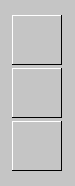
View Class: VerticalPanelView
Spec Class: VerticalPanelViewSpec
The Vertical Panel Widget arranges other widgets vertically.
This is useful for button panels or to arrange multiple sequenceViews
vertically.
The Basics Section:
| ID |
Unique symbolic name (ID) of the box.
This ID can be used by the application to access the widget
via "builder>>componentAt:#ID". |
| Horizontal layout |
Specifies how components are aligned horizontally.
See the Horizontal Panel info page
for a description.
|
| Vertical layout |
Specifies how components are aligned vertically.
See the Horizontal Panel info page
for a description.
|
The Details Section:
| BG-Color |
Defines the background color of the widget.
After selecting the check toggle the background color can be chosen
by selecting the desired colored button. If no color is selected,
the widget takes its default background color from the style sheet. |
| Border |
Defines the width of the border. |
| Level |
Defines the width of the 3D-border.
Positive values provide a raising,
negative values provide a lowering of the widget. |
| Horizontal Space |
Defines the horizontal space between componentns. |
| Vertical Space |
Defines the vertical space between componentns. |
| Ignore invisible |
If on, invisible components are
ignored in the layout of components.
If off, invisible components will reserve space.
Useful to avoid visible rearrangement of components when some become visible/invisible.
|
| Initially Invisible |
Turns on/off that
the widget is initially invisible. |
Below, the arrangements are described and an example for a panel
with 3 button components is shown.
Keep in mind that panels can be used with any type of component - not
limited to Buttons (although, panels are most often used for buttons).
Tip:
If you need some extra spacing between components,
simply add an empty view with a fix extent.
Horizontal layout: (pictures below shown with vertical layout being center)
- left - left aligned arrangement.
Each components preferred extent is used - i.e. components are not resized.
Placements starts at the left of the panel (i.e. no left spacing)
The spacing between components is controlled by the Space attribute
(in the Details section). However, the spacing is reduced,
if required to make all components fit the panel.
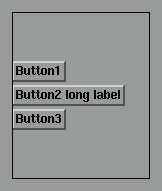
- leftSpace - left aligned arrangement with initial space.
Like above, but placement starts with an initial left spacing.
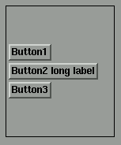
- right - right aligned arrangement.
Analogous to #left - however, components are placed right aligned.
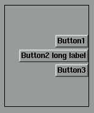
- rightSpace - right aligned arrangement.
Like #right but placement starts with an initial right spacing.
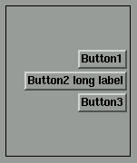
- center - centered arrangement.
Components are centered within the panel.
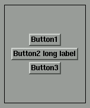
- fit - make components fit the panel.
Unlike all of the above, this layout ignores the components
own preferred extent - instead, all components are resized to fit the
panel (the panels space is evenly divided).
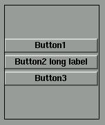
- fitSpace - make components fit the panel and add spacing around.
Like #fit, but adds spacing to the left and right.
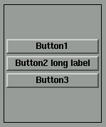
- leftMax -
Like #left, but all components are resized to the size of the
largest component.
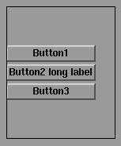
- leftSpaceMax - resize components to max size and add spacing.
Like #leftMax, but adds spacing around.
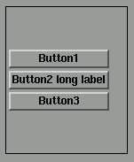
- rightMax - arrange at the right and resize components to max.
Like #right, but all components are resized to the size of the
largest component.
- rightSpaceMax - arrange at the right and resize components to max size plus spacing.
Like #rightMax, but adds spacing around.
- centerMax - arrange centered and resize components to max.
Like #center, but all components are resized to the size of the
largest component.
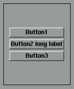
Vertical layout (shown with #center-horizontal layout):
- top - top align components.
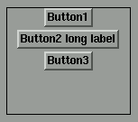
- topSpace - top align components with spacing.
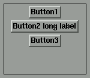
- bottom - bottom align components.
- bottomSpace - bottom align components with spacing.
- center - center components vertically.
- spread - spread components vertically.
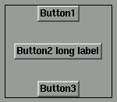
- spreadSpace - spread components vertically with spacing.
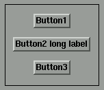
- fit - fit components vertically.
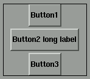
- fitSpace - fit components vertically with spacing.
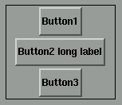
- topFit - arrange from top to bottom; resize the last component to fit vertically.
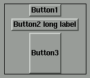
- topFitSpace - arrange from top to bottom; resize the last component to fit vertically with spacing.
like #topFit, but adds spacing
- bottomFit - arrange from bottom; resize the first component to fit vertically.
- bottomFitSpace - arrange from bottom; resize the first component to fit vertically with spacing.
like #bottomFit, but adds spacing
The Help Section:
 see document
"Using the Help Tool"
see document
"Using the Help Tool"
The Layout Section:
see document
"The Layout of the Widgets"
![[stx-logo]](../../../icons/stx.gif)
Copyright © 1998 eXept Software AG, all rights reserved